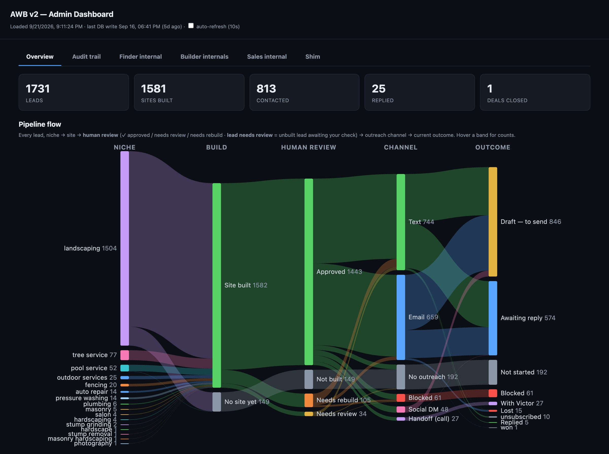
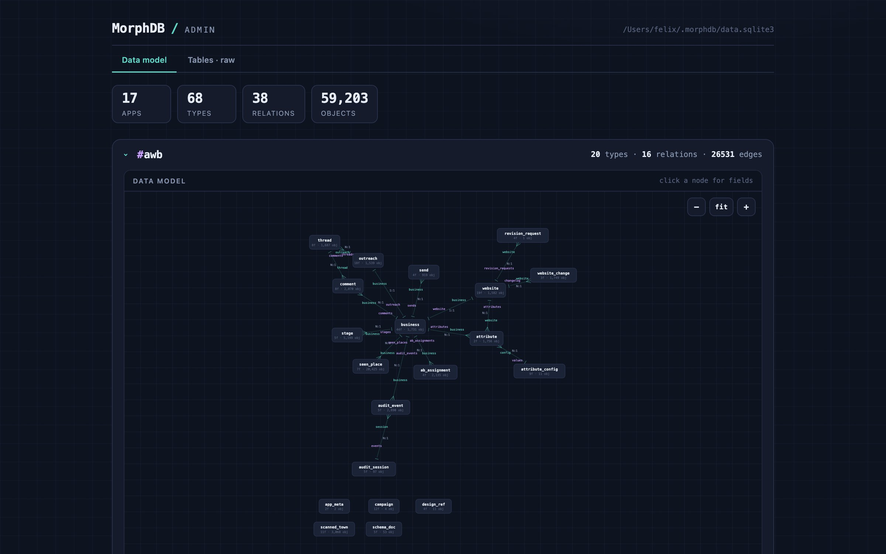
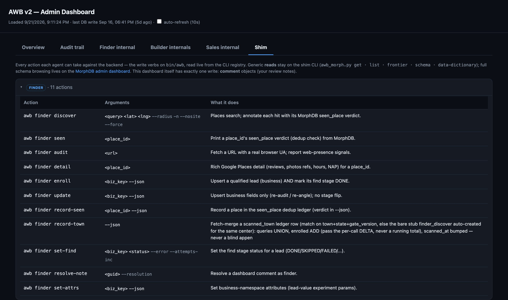
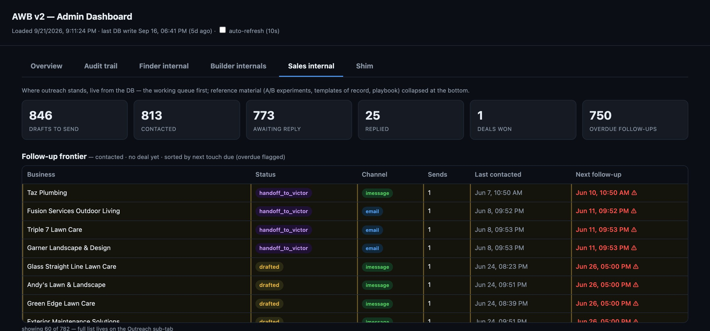
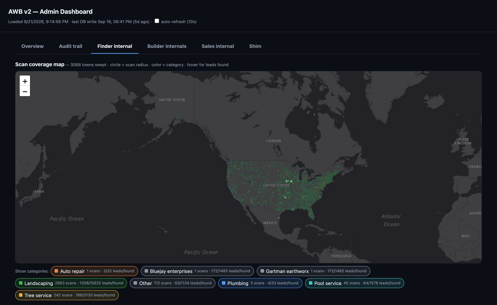
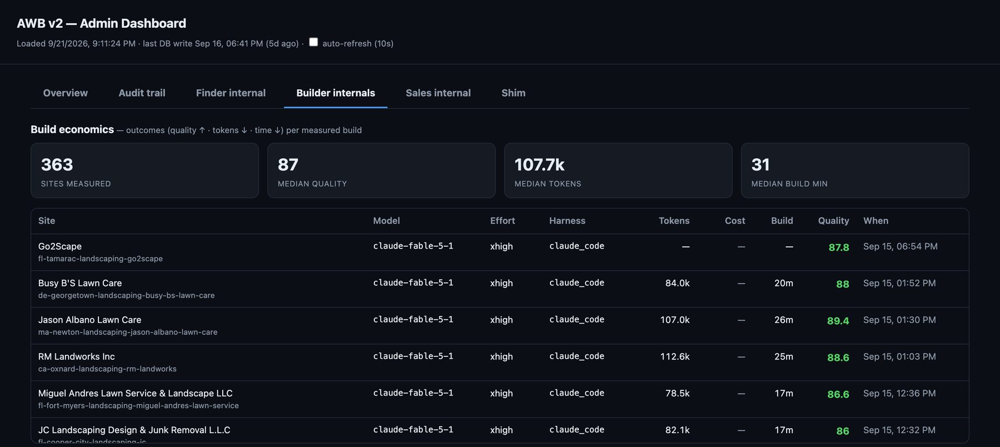
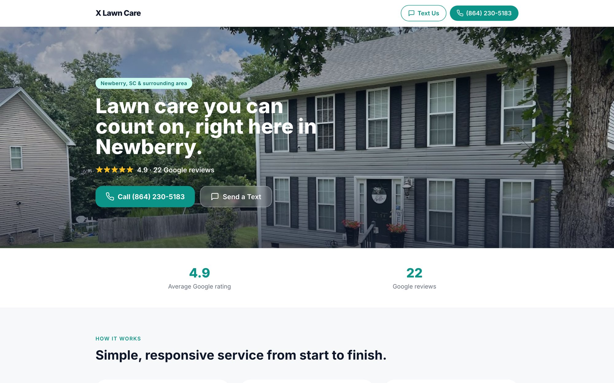
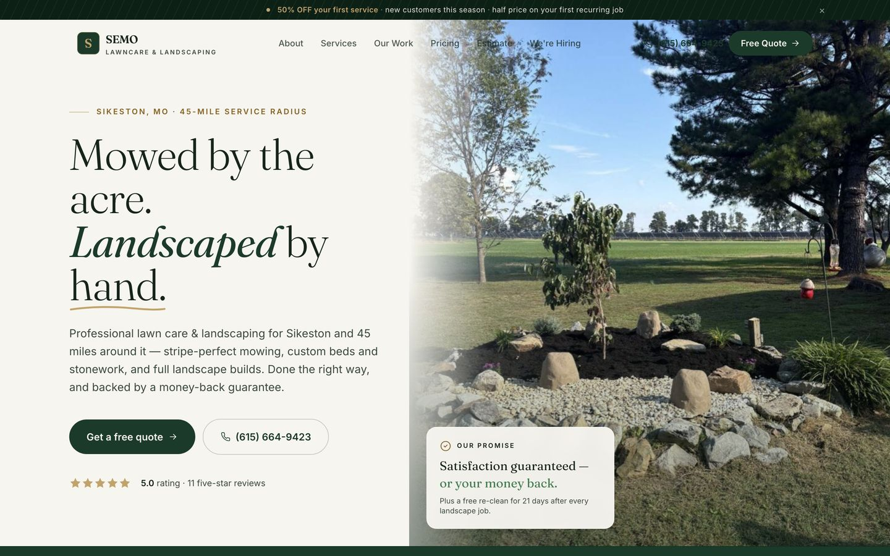
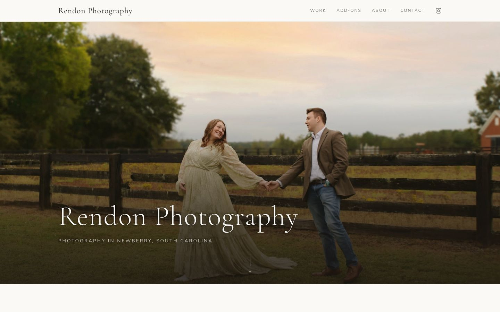
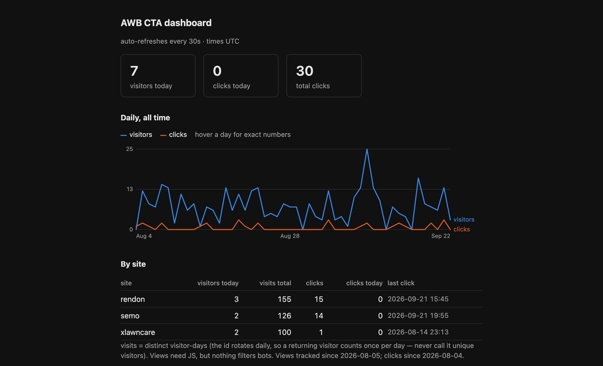

Three AI agents find local businesses with no website, build one, and sell it.
A production multi-agent pipeline I designed, built and operate alone. Finder, Builder and Sales run as autonomous coding agents over one shared database and coordinate only through it. I touch the two steps that cannot be undone: sending a message and answering a reply. Every number on this page is read from the live database.

Three agents, one database, no message bus.
Each agent is the sole writer of its own object types and can read everything else. Work queues are frontier queries ("upstream done, mine still open"), claimed with a timed lease. An agent can crash, restart or run twice and the pipeline resumes without duplicating a build or a message.
Finder
Sweeps a town through Google Places, audits each business's web presence with a real-browser fetch, and enrolls only leads that clear the campaign's binary gate. Cheapest checks run first; a lead that fails any check costs nothing downstream.
Builder
Turns one lead into a single-file static site with the business's own photos and reviews, deploys it to GitHub Pages, and records its levers and outcomes. A separate reviewer scores the rendered page before anything ships.
Sales
Picks the channel, writes a personalized opener around a sourced fact, runs a 3 / 6 / 12-day cadence and logs every touch. Website-change requests from owners route back to Builder as revision objects.
MorphDB: the schema moves, the agents don't.
The backend is MorphDB, a schema-fluid object store I wrote and open-sourced. Agents never read a schema file. At boot they call schema and data-dictionary and adapt. When foreign keys became first-class relations, no agent prompt changed and every CLI contract stayed identical.
- Relations, not string keys.
stage.business,thread.outreach,attribute.config: filterable like an ORM and traversable both ways for free. - No JOINs, views or triggers in MorphDB, so one Python shim recomputes frontiers, the funnel and A/B rollups over the generic object endpoints. A parity check proves it reproduces the old SQL views exactly.
- One CLI per role.
bin/awb <role> <action>bundles every multi-step write, so each mutation is a named, auditable verb. 2,890 audit events so far, one flat feed.

awb app: business at the center, stages, websites, outreach threads, sends, attributes and audit events hanging off it by relation.
Why a custom backend at all? The data model churned weekly while the pipeline was being designed: new stages, new channels, an attribute system, campaigns as rows. A conventional schema would have meant a migration and an API change for each. MorphDB let the model be reshaped from the command line while the agents kept calling the same endpoints.
The same process hosts 17 isolated apps; the pipeline is one of them.
Real messages on real channels, behind a human gate.
Owners of small landscaping firms answer texts, not email. Sales sends iMessage and SMS through BlueBubbles, a REST server on a Mac that drives Messages.app, replacing a fragile AppleScript path with JSON in, real delivery status out. Email is staged as an Apple Mail draft with a phone-viewport screenshot of the preview site. Either way the draft is written to the database first, then I review and send.
- 919 messages sent: 374 iMessage, 323 email, 222 SMS. CAN-SPAM by construction: physical address, opt-outs honored permanently, a send ramp from 8 to 50 per day.
- Replies are read back from Messages' local database and Gmail. A reply flips the lead to negotiating and pings my phone on Telegram; I take every live thread myself.
- Delivery is verified, not assumed. SMS silently drops attachments on some carriers, and iMessage capability flips between touches, so both are re-checked per send and re-read minutes later.

A campaign is a row, not code.
Niche, geography, a binary qualify gate, cost discipline, contact-mining rules and angle guidance all live on one campaign object the Finder reads at boot. Four campaigns so far, from a small-town landscaper "gold-mine" gate to a national landscaping sweep biased to FL, CA, NY and AZ. Every verdict is stamped with the gate version that produced it, so old decisions stay explainable.
- Credibility anchor. Each pitch opens with one fact you could only know by looking at that business, recorded with its source. Unsourced is treated as fabricated and blocks the lead.
- A/B by design.
opener_style(identity-first vs observation-first) andmsg_lengthare assigned per lead per channel by a deterministic hash and rolled up withab-stats. - Cheap before expensive. Dedup by place ID before any fetch, then a once-per-town climate lookup that also picks the site template for every lead in that town.

The agents declare the fields they want to optimize.
Two loops. The fast loop tunes parameters: any agent can declare a new lever at runtime with attr-config (build model, reasoning effort, harness; business size, neighborhood, income), record it on every build beside the outcomes (quality score, tokens, minutes), and a clean-context auditor scores each arm blind. The slow loop tunes the prose: a tune workflow runs the real pipeline, has an adversary agent score the output and name defects in the agents' own instruction files, then an improve agent edits those files, converging on a quality bar.
- 363 measured builds, median quality 87 / 100, median 31 minutes. The review protocol moved quality about 21 rubric points; model choice moved it about 8. The cost lever is cheaper reviewers, not cheaper builders.
- Self-scores ran 4 to 30 points optimistic, so no agent grades its own work: a separate evaluator with a clean context scores the rendered page against a rubric a human can edit.
- One experiment at a time, pre-registered with its metric and decision rule, paired within a wave. Freestyle toggling produces anecdotes, not answers.

What was actually difficult.
- Fabrication
- Language models invent plausible phone numbers, review counts and history. Every on-page and in-pitch fact must trace to a database row with a source, and a separate reviewer inspects the rendered pixels, not the builder's intent. A daily read-only reviewer re-verifies sent claims and logs any that drifted.
- Coordination without messages
- Frontier queries, timed leases with automatic healing, and idempotent upserts keyed by a content hash. A lost message never loses work, and three long-lived agents never need to be online at once.
- A backend that can't JOIN
- All relational logic lives in one shim and is verified against the old SQL views, so the schema stays free to change while the frontier semantics stay exact.
- Deliverability
- Carrier SMS degrades three different ways; iMessage is clean but its availability per number is not stable. Capability is checked per send, and delivery is re-read from the source of truth rather than trusted from the API response.
- Throughput ceilings
- Builds are memory- and quota-bound at roughly ten per hour; unclosed browser sessions once filled the disk in an hour. Two or three agents with review immediately after each build beat wide fan-outs.
- Trust
- The dashboard opens the store read-only with exactly one write, my review comments, so observing the system never perturbs it. Only sending and replying are human.
Three paying clients on their own domains.
Each moved from a GitHub Pages preview to the client's domain on Cloudflare Pages, with click tracking on every call, text, email and social button, a monthly plain-English value report, and a Stripe subscription.



- After the sale, the site reports on itself. A snippet on each client site beacons call, text, email and social clicks to a Cloudflare Worker that writes to D1; visitor-days come from the same beacon.
- 30 CTA clicks and 381 visitor-days across the three sites since tracking began in August. The monthly value report reads this table and the zone analytics, then drafts the client a plain-English email of what the site did.
- Honest metrics by construction. The visitor id rotates daily, so the dashboard counts visitor-days and says so, rather than claiming unique visitors it cannot know.
